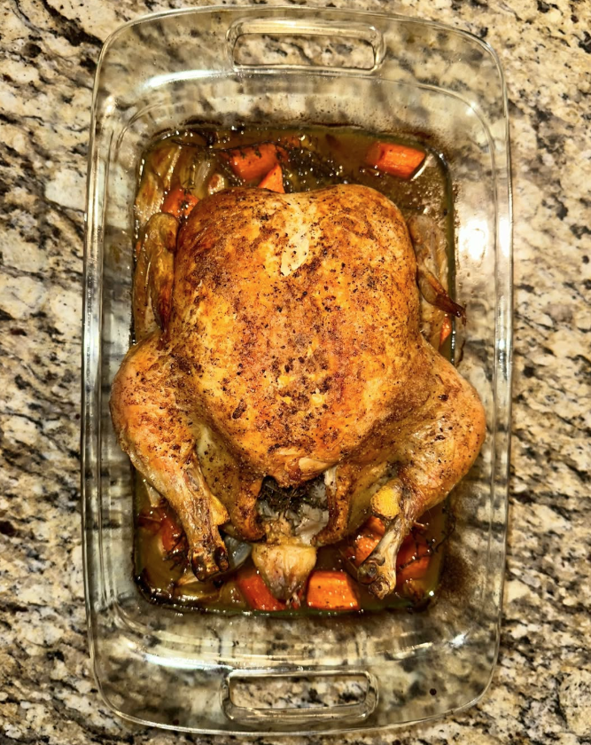

Oven Roasted Chicken with Roasted Vegetables

Ingredients
Whole Chicken
Onion
Garlic
Carrots
Lemon
Fresh Bunch of Thyme
Butter
Olive Oil
Salt & Pepper
Instructions
Preheat oven to 425 Discard any giblets or innards from the chicken Rinse the chicken inside and out and then pat dry with paper towels and set aside Chop onion into vertical slices Cut off top of garlic bulb to expose the cloves Roll cut carrots into inch long pieces Quarter Lemon In a roasting pan, mix onions and carrots and half of thyme with olive oil and season Liberally Salt the cavity of the chicken Insert chopped garlic bulb, lemon, and half of thyme into cavity Place chicken over the vegetables in the roasting pan Coat the chicken with melted butter Season with salt & pepper Roast in oven for about 1 hour 15 minutes (depends on size of chicken) Let rest for 10-15 minutes before slicing and serving